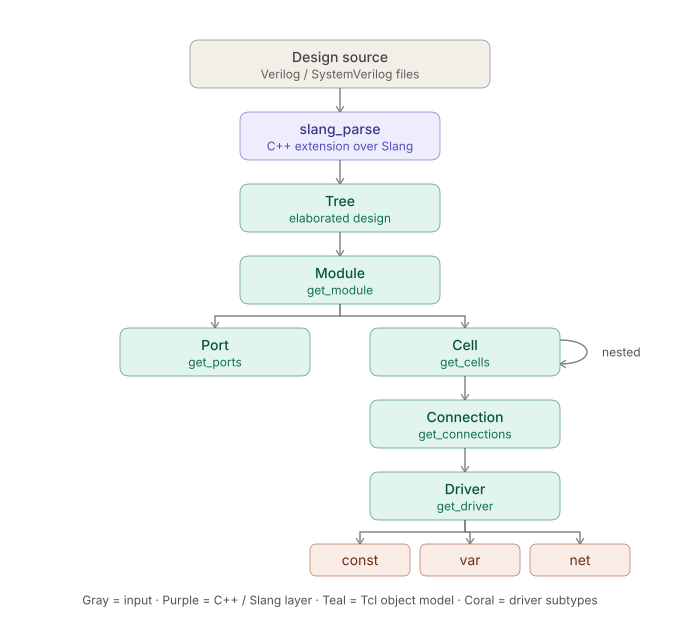
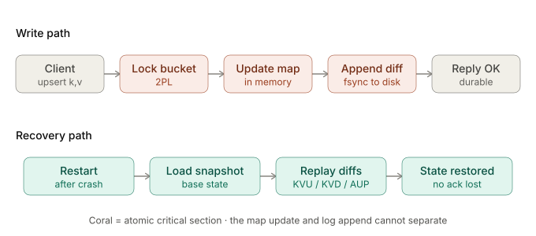
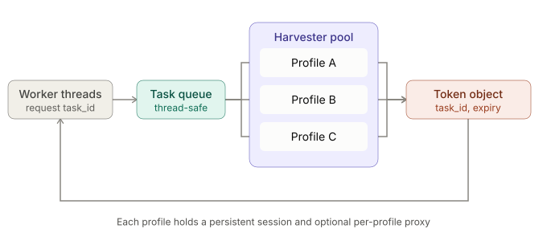

home
- tclslang: a tcl extension for verilog analysis
c/c++, svlang
A high-performance Tcl extension written in C++ that integrates the Slang SystemVerilog library into the Tcl scripting environment. Tclslang provides a programmable, object-oriented interface for parsing Verilog files and introspecting hardware designs, allowing users to navigate modules, cells, ports, and analyze signal drivers directly from Tcl scripts.

- encrypted c++ server/client - for lehigh OS class
c/c++
A project that I built on over the course of my lehigh university operating systems (cse303).
Manages encrypted communication and commands between a client and server, all in c/c++.

- chrome recaptcha harvester
python3, html, css, flask, chromedriver, multi-threading
my most popular open-source project I made for people looking to automate web-scraping or data
collection from websites that have recaptcha v2 (image select) and v3 (invisible). The project works
as both a harvester and a pipeline for recaptcha tokens. I spent around four years
perfecting and updating this project.

- this website
python, html, flask
a simple website with the goal of conveying professional and personal info about
me as easily and clearly as possible. adapted for mobile.
- heardle ultimate: a spotify-powered music game
python, flask, jinja2, requests, html/css/javascript, spotify web api/sdk
A full-stack web application that allows users to play a "Heardle"-style music guessing game for any artist on Spotify. Built with Python and Flask, this app implements the complete Spotify OAuth 2.0 flow for user authentication and uses the Spotify Web API to dynamically fetch artist and track data for endless gameplay.
- high-concurrency queue-it bot
go (golang), goroutines, goquery, REST APIs, discord webhooks
A command-line tool written in Go designed to automate navigating Queue-IT virtual waiting rooms for high-demand online events. It utilizes goroutines for high concurrency, sophisticated session management with proxy rotation, and features built-in solvers for various anti-bot challenges, including Proof-of-Work and image-based captchas.
- covid-19 vaccine appointment scheduler
python, requests
One of my first ever programs. I made it for my family to monitor and reserve covid-19 vaccine appointments
at CVS when slots were limited.
- leet arena: real-time coding competition platform
python, flask, mongoDB, flask-socketIO (websockets), leetcode api, bcrypt
A real-time, multiplayer web application where users compete to solve LeetCode-style coding challenges the fastest. Built with a Flask and MongoDB backend, LeetArena uses WebSockets for live lobby interactions and queries the LeetCode GraphQL API to fetch problems and submit solutions on behalf of the user.
- athleats: food delivery platform
python, flask, html, css, SQLAlchemy, mysql, google drive api, pillow, bcrypt
A full-stack web application built with Python and Flask that serves as a food delivery scheduling platform for a school's athletic community. Features a multi-tiered user system (user, staff, admin), order processing, and robust integration with the Google Drive API for automated receipt management.
- waygrade
- adyen device fingerprint generator